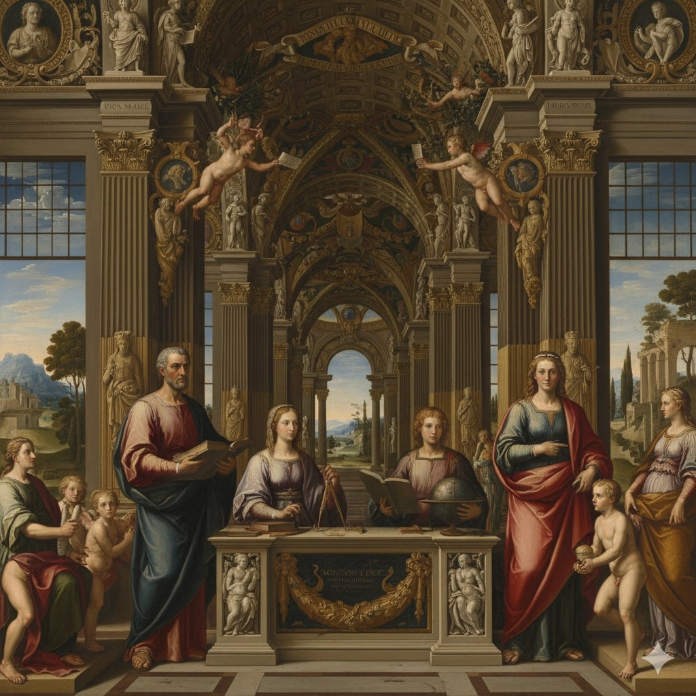
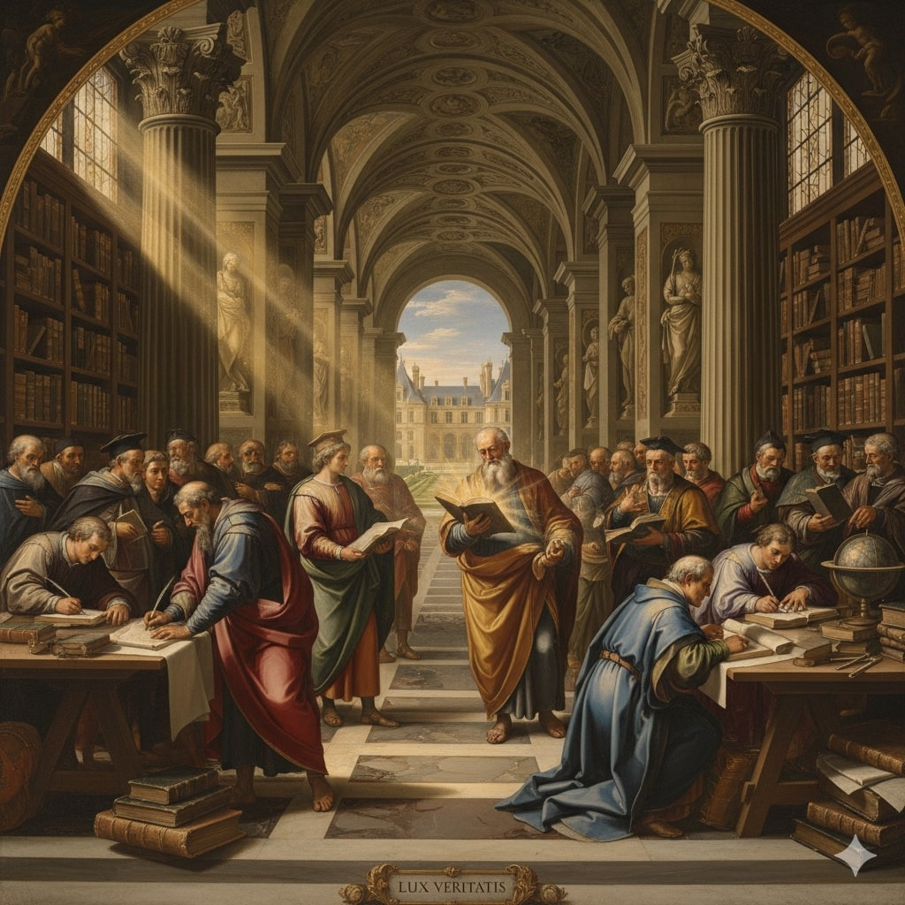
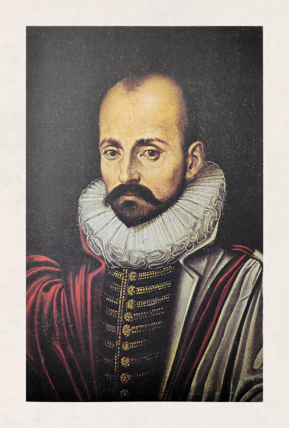
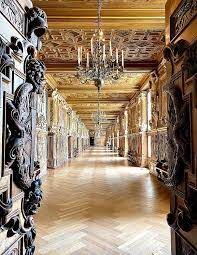

🇬🇧 English
French History
Home
Renaissance
Topics
The Renaissance & Humanism in France (16th Century)
Introduction

What Is Humanism?

Key French Humanists

Art & Architecture

The Printing Revolution
← Previous: The 100 Years War
Next Topic →